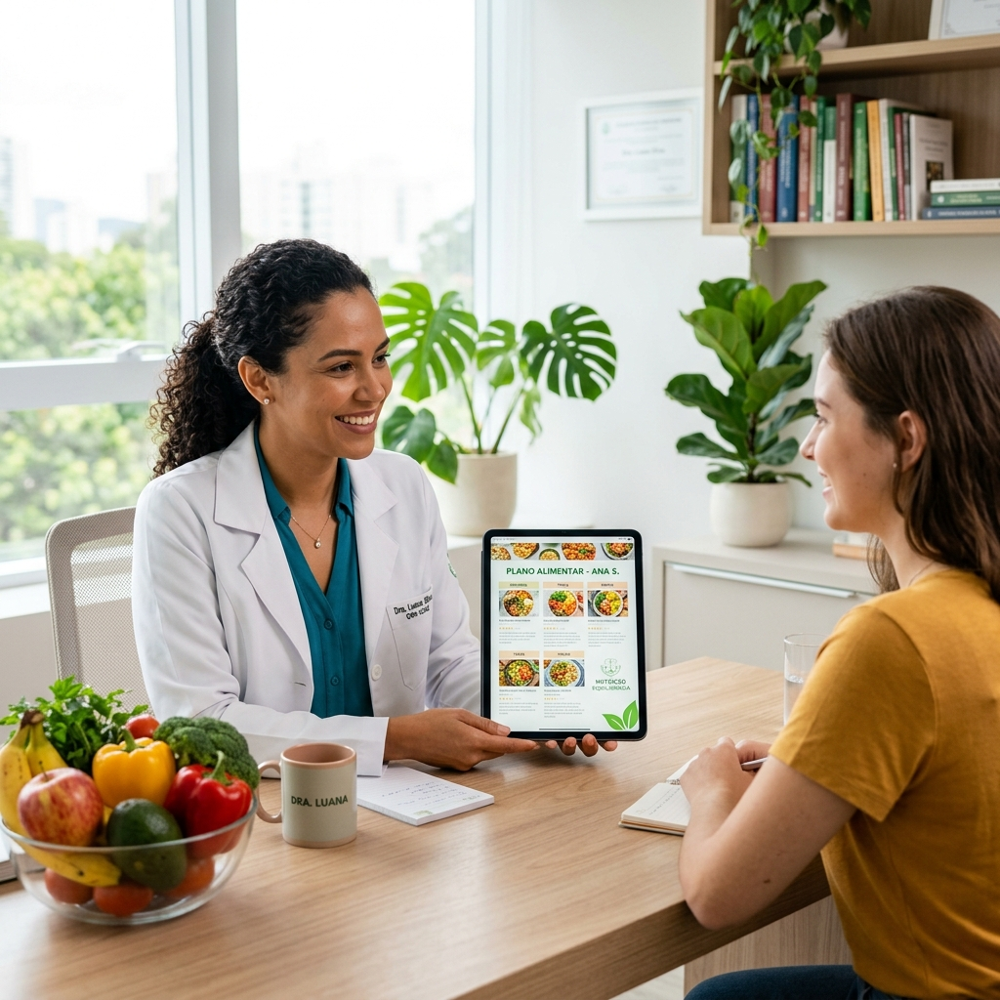

Transforme sua saúde com uma alimentação que funciona para você
Nutrição personalizada com base científica e acolhimento. Resultados reais para uma vida mais saudável, equilibrada e com mais energia.
Cuidado nutricional completo e personalizado
Cada pessoa é única, e seu plano alimentar também deve ser.
Alimentação Personalizada
Planos alimentares desenvolvidos exclusivamente para o seu corpo, rotina e objetivos.
Acompanhamento Completo
Monitoramento contínuo da sua evolução com ajustes sempre que necessário.
Resultados Sustentáveis
Foco em mudanças duradouras, sem dietas restritivas que não funcionam a longo prazo.
Atendimento Humanizado
Escuta ativa e empatia em cada consulta. Você não é apenas um número.
Planos Individualizados
Estratégias nutricionais alinhadas com suas preferências, intolerâncias e metas.
Base Científica
Condutas fundamentadas em evidências científicas atualizadas e protocolos seguros.

Dra. Marina Santos
Sou nutricionista formada pela USP, com pós-graduação em Nutrição Clínica e Esportiva. Há mais de 10 anos, ajudo pessoas a transformarem sua relação com a comida e conquistarem uma vida mais saudável.
Minha missão é oferecer um atendimento acolhedor, baseado em ciência, respeitando a individualidade de cada paciente. Acredito que comer bem deve ser prazeroso e sustentável.
Áreas de Atuação
Atendimento especializado para diferentes necessidades e fases da vida.
Emagrecimento
Perda de peso saudável e sustentável
Hipertrofia
Ganho de massa muscular com nutrição
Nutrição Clínica
Diabetes, hipertensão e mais
Gestantes
Nutrição para mãe e bebê
Idosos
Nutrição para longevidade
Crianças
Alimentação infantil saudável
Esportistas
Performance e recuperação
Reeducação Alimentar
Nova relação com a comida
Como Funciona
Um processo simples e acolhedor para cuidar da sua saúde.
Agendamento
Escolha o melhor horário pelo WhatsApp ou formulário online.
Avaliação
Avaliação completa: histórico, exames, bioimpedância e metas.
Plano Alimentar
Plano personalizado, prático e adaptado ao seu dia a dia.
Acompanhamento
Retornos periódicos para ajustes e suporte contínuo.
O Que Você Recebe
Muito mais que uma consulta. Uma experiência completa de cuidado.
Atendimento Online
Consultas por videoconferência de qualquer lugar
Atendimento Presencial
Consultório moderno e acolhedor
Plano Personalizado
100% adaptado às suas necessidades
Suporte via WhatsApp
Tire dúvidas entre as consultas
Receitas Exclusivas
Receitas práticas e deliciosas
Avaliação Física
Análise completa da composição corporal
Bioimpedância
Tecnologia para acompanhar sua evolução
App de Acompanhamento
Acompanhe seu progresso na palma da mão
O Que Meus Pacientes Dizem
Histórias reais de transformação e bem-estar.
A Dra. Marina mudou minha vida! Perdi 15kg de forma saudável, sem passar fome. O acompanhamento é incrível e ela realmente se importa com cada paciente.

Finalmente encontrei uma nutricionista que entende minha rotina de atleta. Minha performance melhorou demais e os resultados foram muito além do esperado.

O atendimento online é super prático! Consegui controlar minha diabetes com uma alimentação deliciosa. Recomendo de olhos fechados.

Transformações Reais
Resultados alcançados com dedicação e acompanhamento profissional.
Emagrecimento
-12kg em 5 meses
Reeducação Alimentar
Mudança de hábitos
Ganho de Massa
+8kg de massa magra
Perguntas Frequentes
Tire suas dúvidas antes de agendar.
Na primeira consulta, fazemos uma avaliação completa incluindo histórico de saúde, hábitos alimentares, exames laboratoriais, avaliação antropométrica e bioimpedância. Tudo para criar o plano perfeito para você.
A primeira consulta dura em média 60 minutos. As consultas de retorno duram aproximadamente 30 a 40 minutos.
Atualmente trabalhamos com atendimento particular. Porém, emitimos recibo para reembolso junto ao seu plano de saúde.
Sim! Oferecemos atendimento por videoconferência com a mesma qualidade e atenção do presencial. Ideal para quem tem rotina corrida ou mora em outra cidade.
O plano alimentar é 100% personalizado, considerando seus objetivos, preferências, rotina, intolerâncias e condições de saúde. Você recebe tudo em formato digital com receitas e substituições.
De forma alguma! Trabalhamos com flexibilidade e equilíbrio. O objetivo é que você coma bem, com prazer, e alcance seus resultados de forma sustentável.
Pronto para transformar sua saúde?
Dê o primeiro passo para uma vida mais saudável. Agende sua consulta agora e comece sua transformação hoje mesmo.